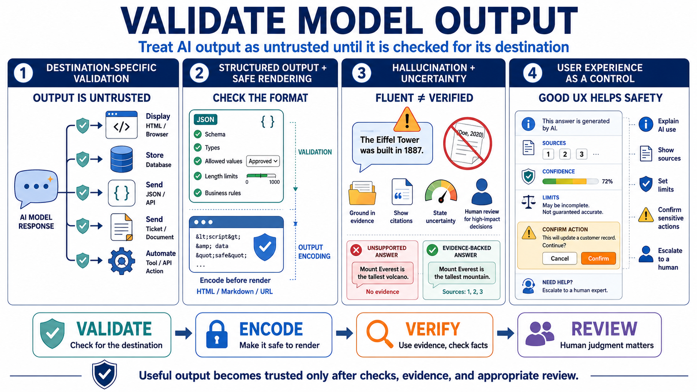

Output Handling, Validation, and User Experience
Connecting to LMS... Progress: in progress

Narration
Model output should be treated as untrusted until it is validated for the destination. A response may be fluent, confident, and useful while still being incomplete, incorrect, unauthorized, unsafe to render, or inappropriate for an automated workflow. If output will be displayed in HTML, stored in a database, sent to another system, used as JSON, inserted into a ticket, or passed to a tool, it needs the controls appropriate to that destination.
Structured output validation helps when the application expects fields rather than prose. JSON schema concepts, type checks, allowed values, length limits, and business-rule validation can catch output that does not match the contract. Safe rendering and output encoding protect user interfaces when model text includes characters that have special meaning in HTML, Markdown, URLs, or other formats. Validation and encoding solve different problems, so both may be needed.
Hallucination and uncertainty are security-relevant. Incorrect references, invented citations, wrong policy summaries, false confidence, or misleading recommendations can affect user decisions. AI applications should ground answers in evidence where possible, show citations when useful, communicate uncertainty, and avoid presenting generated text as verified truth. For high-impact workflows, the application should require human review or independent verification before decisions are accepted.
User experience is part of the control model. Users should understand when they are interacting with an AI system, what data sources may have influenced an answer, what limitations apply, and when a human or authoritative system should be consulted. Good UX does not bury safety in long disclaimers. It gives users practical signals: source references, confidence boundaries, confirmation prompts, warnings before sensitive actions, and clear escalation paths.